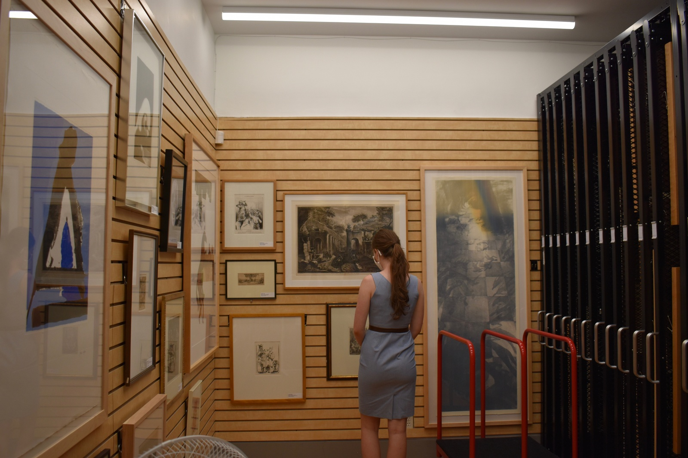
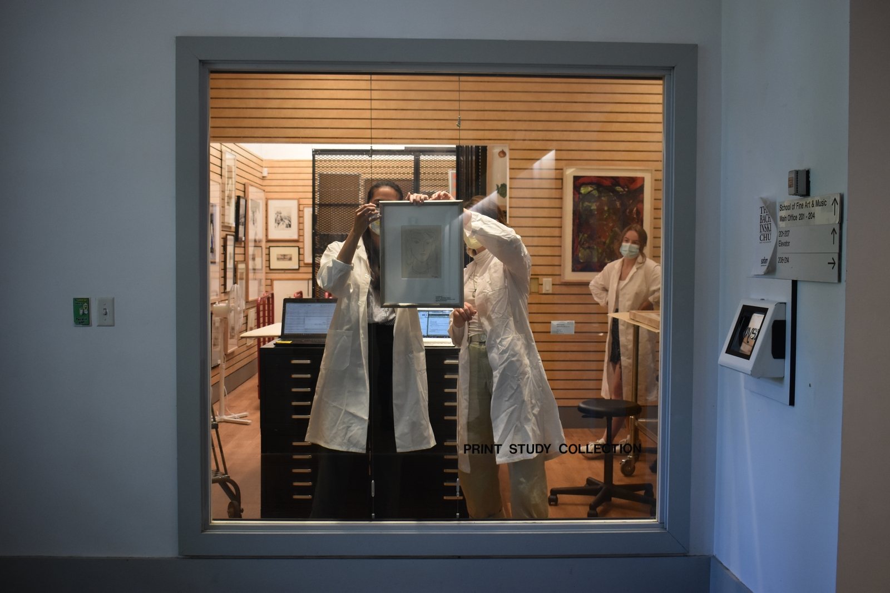

Browse Collection >
Browse Collection >
Spend some time immersing yourself in the rich
and varied collection of works at the Bachinski/Chu
Exhibitions provide wonderful opportunities for students to be directly involved in the collection, allows them to conduct research related to the works in the B/Chu, and their relationship to the University of Guelph and a broader cultural context.
 Drawn from the Bachinski/Chu Print Study Collection, these works emphasize crucial links between humankind, technology, and empathy. The School of Fine Art and Music is keen to complicate traditional thinking around communication and the “interplay,” or the reciprocal exchange, free interaction, and mutual operation between people and modern technology.
View Exhibition